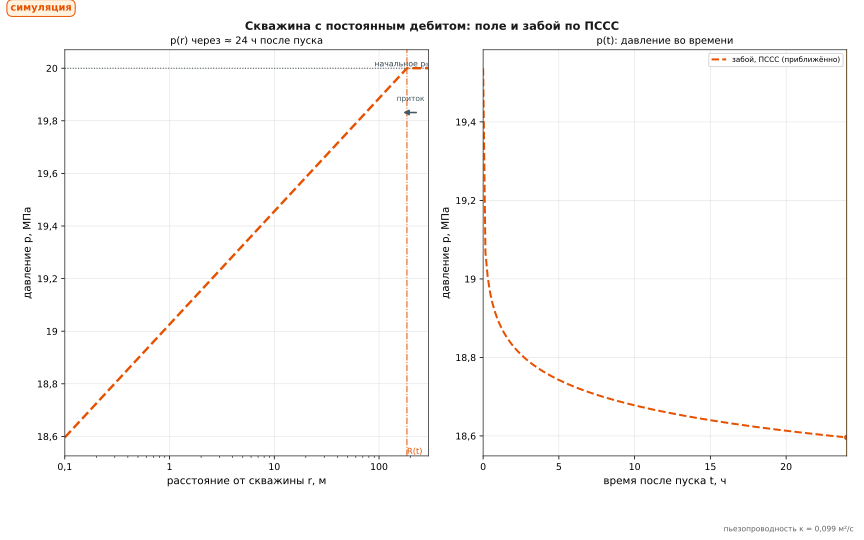

Путь › Как применять ПССС и понимать погрешность › Шаг 57 из 60
Давление в пласте и на забое
В книге: «Плоскорадиальный неустановившийся фильтрационный поток упругой жидкости» стр. 499
Опирается на: шаг 56 «Как растёт радиус возмущения» (предпосылка), шаг 54 «Скважина с постоянным дебитом: логарифмический профиль» (предпосылка)
Суть
Зная радиус возмущения, можно найти давление в любой точке пласта в любой момент.
Внутри зоны профиль логарифмический (24.15), за фронтом давление начальное.
Депрессию на скважине (24.16) получают, взяв давление на стенке, r = rс.
Пороговая идея. Различать формулу поля и формулу его значения на стенке. модель
Как это работает
Давление в любой точке
После того как радиус R(t) найден, формула (24.10) даёт давление в любой точке и в любой момент. Для этого R(t) из (24.14) подставляют в стационарный логарифмический профиль. стр. 499
«Тогда из равенства (24.10) можно определить давление в любой точке пласта в любой момент времени $t$»
«$$p(r, t) = p_\kappa - \frac{Q\mu}{2\pi kh} \ln \frac{\sqrt{r_c^2 + 4\kappa t}}{r}, \quad r_c \leq r \leq \sqrt{r_c^2 + 4\kappa t}; \quad (24.15)$$»
Внутренняя ветвь
Получается формула (24.15): p = pк − Qμ/(2πkh)·ln(√(rс² + 4κt)/r). Она действует от стенки скважины до фронта включительно: rс ≤ r ≤ √(rс² + 4κt). стр. 499
«$$p(r, t) = p_\kappa - \frac{Q\mu}{2\pi kh} \ln \frac{\sqrt{r_c^2 + 4\kappa t}}{r}, \quad r_c \leq r \leq \sqrt{r_c^2 + 4\kappa t}; \quad (24.15)$$»
Внешняя ветвь
За фронтом давление принимают равным начальному. При r > √(rс² + 4κt) давление p = pк. стр. 499
«$$p(r, t) = p_\kappa, \quad r > \sqrt{r_c^2 + 4\kappa t}.$$»
Депрессия на скважине
Депрессия на скважине — начальное давление минус забойное: Δpс = pк − pс(t). По формуле (24.16) Δpс = Qμ/(2πkh)·ln(√(rс² + 4κt)/rс). Логарифм берут от отношения радиуса зоны к радиусу скважины. стр. 499
«$$\Delta p_c \equiv p_\kappa - p_c(t) = \frac{Q\mu}{2\pi kh} \ln \frac{\sqrt{r_c^2 + 4\kappa t}}{r_c}. \quad (24.16)$$»
Нюанс
Не путайте формулу поля и её значение на стенке. В (24.15) под логарифмом стоит расстояние до точки r. В (24.16) вместо него стоит радиус скважины rс. Ближе стенки скважины точек пласта нет. стр. 499

По шагам
Как посчитать давление и депрессию
- Рассчитайте радиус возмущения √(rс² + 4κt) в нужный момент. стр. 499
- Выберите внутреннюю или внешнюю ветвь по положению точки r. стр. 499
- Для депрессии на скважине подставьте r = rс по (24.16). стр. 499
Цифры и условия
- Формула (24.15) верна при rс ≤ r ≤ √(rс² + 4κt). стр. 499
- При r > √(rс² + 4κt) давление равно pк. стр. 499
Формулы
Внутренняя ветвь давления с подстановкой текущего радиуса. стр. 499
| Обозначение | Что это | Единицы |
|---|---|---|
| $p$ | пластовое давление в рассматриваемой точке | Па |
| $r$ | расстояние от оси скважины | м |
| $t$ | время с начала отбора; dt — его малое приращение | с |
| $p_\kappa$ | начальное давление в пласте и давление на границе возмущения | Па |
| $Q$ | объёмный дебит жидкости | м³/с |
| $\mu$ | динамическая вязкость жидкости | Па·с |
| $k$ | проницаемость пласта | м² |
| $h$ | толщина пласта | м |
| $r_c$ | радиус скважины | м |
| $\kappa$ | коэффициент пьезопроводности | м²/с |
Внешняя ветвь неизменного давления. стр. 499
| Обозначение | Что это | Единицы |
|---|---|---|
| $p$ | пластовое давление в рассматриваемой точке | Па |
| $r$ | расстояние от оси скважины | м |
| $t$ | время с начала отбора; dt — его малое приращение | с |
| $p_\kappa$ | начальное давление в пласте и давление на границе возмущения | Па |
| $r_c$ | радиус скважины | м |
| $\kappa$ | коэффициент пьезопроводности | м²/с |
Депрессия на скважине при постоянном дебите. стр. 499
| Обозначение | Что это | Единицы |
|---|---|---|
| $\Delta p_c$ | депрессия на скважине | Па |
| $p_\kappa$ | начальное давление в пласте и давление на границе возмущения | Па |
| $p_c$ | давление на стенке скважины | Па |
| $t$ | время с начала отбора; dt — его малое приращение | с |
| $Q$ | объёмный дебит жидкости | м³/с |
| $\mu$ | динамическая вязкость жидкости | Па·с |
| $k$ | проницаемость пласта | м² |
| $h$ | толщина пласта | м |
| $r_c$ | радиус скважины | м |
| $\kappa$ | коэффициент пьезопроводности | м²/с |
Что это значит для данных модель
Для расчёта «Давление и забойная депрессия при постоянном дебите» отделите исходные параметры от модельных выходов.
- Вход
- Время, радиус точки, радиус скважины, проницаемость, толщина, пьезопроводность, вязкость, постоянный дебит и начальное давление.
- Выход
- Давление в точке и забойная депрессия.
- Где ломается
- Радиальная координата в пласте лежит не ближе стенки скважины.
Где здесь ручной труд специалиста
- Входные данные
- Время, радиус точки, радиус скважины, проницаемость, толщина, пьезопроводность, вязкость, постоянный дебит и начальное давление.
- Ручные шаги
- Рассчитайте радиус возмущения в нужный момент.; Выберите внутреннюю или внешнюю ветвь по положению точки.; Вычислите депрессию на стенке как разность давлений.
- Точки суждения
- Корректно классифицировать точку по радиусу.
- Время
- Время не оценено в источнике.
- Типичные ошибки
- Подставить расстояние до произвольной точки в формулу именно забойной депрессии.
Аналогия модель
Одна функция поля и отдельная обёртка для запроса в фиксированной позиции.
Где аналогия перестаёт работать: В позиции на стенке определяется физическое граничное значение, а не произвольная настройка.
Как это делается сейчас модель
Тестируйте совпадение внутренней и внешней ветвей на границе зоны.
Новые понятия
- дебит
- Объём жидкости, отбираемый за единицу времени. стр. 499
- депрессия
- Разность начального давления в пласте и давления на выработке. стр. 499
- возмущённая область
- Часть пласта, в которой модель учитывает вызванное отбором изменение давления. стр. 499
- забойное давление
- Давление у забоя: в расчётной модели — на стенке выработки. стр. 499
- плоскорадиальный поток
- Течение к скважине, при котором в горизонтальной плоскости давление зависит от расстояния до её оси. стр. 499
- пьезопроводность
- Коэффициент, задающий масштаб распространения изменения давления в данной модели. стр. 499
Проверь себя
Расставьте шаги расчёта по порядку.
Перетащите пункты (мышью или пальцем за ⠿) или двигайте кнопками ↑ ↓.
- Рассчитайте радиус возмущения √(rс² + 4κt) в нужный момент.
- Для депрессии на скважине подставьте r = rс по (24.16).
- Выберите внутреннюю или внешнюю ветвь по положению точки r.
Верный ответ: Рассчитайте радиус возмущения √(rс² + 4κt) в нужный момент. → Выберите внутреннюю или внешнюю ветвь по положению точки r. → Для депрессии на скважине подставьте r = rс по (24.16).
Сначала радиус зоны, затем ветвь профиля, затем значение на стенке. Где это в тексте (стр. 499) →
Заполните пропуски о формулах (24.15) и (24.16).
В (24.15) под логарифмом стоит расстояние до точки . В (24.16) вместо него стоит радиус .
Верный ответ: В (24.15) под логарифмом стоит расстояние до точки [r]. В (24.16) вместо него стоит радиус [скважины].
Депрессия на скважине — это значение поля на стенке, r = rс. Где это в тексте (стр. 499) →
Источник
Все утверждения шага с дословной цитатой автора и страницей книги (по PDF).
После определения радиуса формула (24.10) даёт давление для заданных координаты и времени. вывод
«Тогда из равенства (24.10) можно определить давление в любой точке пласта в любой момент времени $t$»
Внутренняя формула (24.15) применяется от стенки скважины до фронта включительно. вывод
«$$p(r, t) = p_\kappa - \frac{Q\mu}{2\pi kh} \ln \frac{\sqrt{r_c^2 + 4\kappa t}}{r}, \quad r_c \leq r \leq \sqrt{r_c^2 + 4\kappa t}; \quad (24.15)$$»
Внутренний профиль получен подстановкой R(t) из (24.14) в стационарный логарифмический профиль. вывод
«$$p(r, t) = p_\kappa - \frac{Q\mu}{2\pi kh} \ln \frac{\sqrt{r_c^2 + 4\kappa t}}{r}, \quad r_c \leq r \leq \sqrt{r_c^2 + 4\kappa t}; \quad (24.15)$$»
За фронтом давление принимают равным исходному. вывод
«$$p(r, t) = p_\kappa, \quad r > \sqrt{r_c^2 + 4\kappa t}.$$»
Депрессия на скважине равна начальному давлению минус забойное; логарифм в (24.16) берут от отношения текущего радиуса зоны к радиусу скважины. вывод
«$$\Delta p_c \equiv p_\kappa - p_c(t) = \frac{Q\mu}{2\pi kh} \ln \frac{\sqrt{r_c^2 + 4\kappa t}}{r_c}. \quad (24.16)$$»
На этот шаг опираются: шаг 58 «Ошибка ПССС убывает со временем».